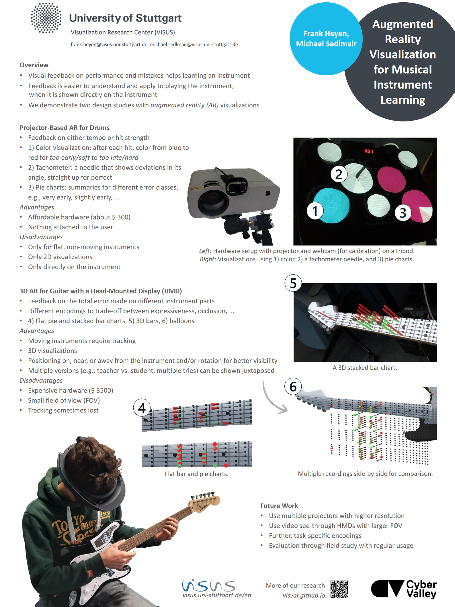

Augmented Reality Visualization for Musical Instrument Learning

Venue. ISMIR (2022) LBD Poster
Authors. Frank Heyen, Michael Sedlmair
Abstract. We contribute two design studies for augmented reality visualizations that support learning musical instruments. First, we designed simple, glanceable encodings for drum kits, which we display through a projector. As second instrument, we chose guitar and designed visualizations to be displayed either on a screen as an augmented mirror or an an optical see-through AR headset. These modalities allow us to also show information around the instrument and in 3D. We evaluated our prototypes through case studies and our results demonstrate the general effectivity and revealed design-related and technical limitations.
Acknowledgements. This work was funded by the Cyber Valley Research Fund.